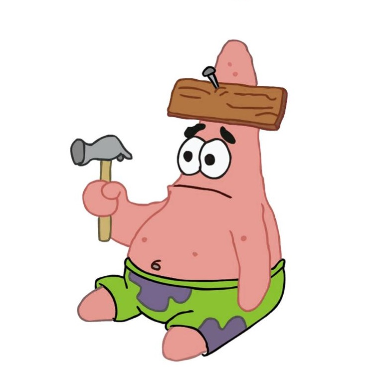
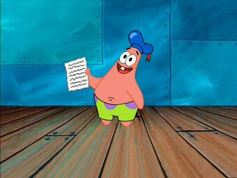

Патрик Стар
Автор Никита Волков
Патрик Стар – это один из основных персонажей мультсериала "Губка Боб Квадратные Штаны". Является лучшим другом Губки Боба, а также одним из его соседей. Он розовая, толстая, наивная и ленивая морская звезда. Живёт под скалой в подводном городе Бикини Боттом по соседству с Губкой Бобом и Сквидвардом. Он и Губка Боб очень часто раздражают Сквидварда, но делают это не осознано и в основном имеют добрые намерения. Является сыном Херба и Мардж Стар, а также братом Сэм Стар. В оригинале он был озвучен Биллом Фагербейком, а в русской озвучке — Юрием Маляровым.
Он стал вторым ребёнком Херба и Мардж Стар. Его сестра – Сэм, была потеряна в море, ещё когда она с Патриком была ребёнком. Патрик ни разу не встречался с ней до событий эпизода "Большая сестра Сэм". Ещё с самого детства он познакомился с Губкой Бобом. Когда он был ребёнком, Патрик имел привычку читать стихи во время уроков в спортивном зале, что портило его репутацию и сделало его мишенью для игроков пионербола. Когда он вырос, он переехал в дом-скалу. Он жил по соседству со Сквидвардом. Как узнаётся из серии "Дом, милый ананас", в какой-то момент его выгнали родители и строго запрещали возвращаться. Таким образом, он создал свой камень, с той лишь разницей, что он добавил к нему флюгер. В какой-то момент Патрик, вместе с Кабалой Флетсом, поступил в колледж. Он часто забывает что там учился. Однажды, когда Сквидвард занимался садоводством, в воду упал ананас, который позже превратился в дом. Вскоре, в этом самом ананасе поселился Губка Боб и по сей день остаётся соседом Патрика. Позже, в серии "Довозить до слёз", он получил водительские права и стал миллионным жителем, который сдал экзамен на них. За это, он получил лодкомобиль "Молния 3000", который он выбросил, когда подумал что он сломан.
Патрик представляет собой типичного «счастливого толстяка». В эпизоде «Коробка с секретом» Патрик, несмотря на свою глупость, демонстрирует приёмы . Наиболее наглядно это показано в серии «Патрик — умные штаны», где после несчастного случая он временно превращается в «непризнанного гения». Таким образом, примером Патрика можно проиллюстрировать теорию Дж. С. Милля.
Патрик и Губка Боб лучшие друзья с самого детства. Они провели вместе большую часть своей жизни. Патрик очень часто может позаботится о Губке Бобе, как показано во множестве эпизодов, он часто пытается дать ему совет, даже если он не особо помогает. Патрик настолько верен их дружбе, что когда Губка Боб начал жить как медуза, он хотел его поймать и сделать своим "трофеем", чтобы никогда с ним не расставаться. Он также показывает скорбь, когда Губка Боб куда-то уходит. Хоть в некоторых сериях он и ссорился с Губкой Бобом, они всегда мирились и вновь становились лучшими друзьями.

Патрик, вместе с Губкой Бобом, часто раздражают Сквидварда. Как и Губка Боб, Патрик считает Сквидварда одним из его лучших друзей, несмотря на то что осьминог не отвечает взаимностью на его "дружбу". В отличие от Губки Боба, Патрик иногда замечал, что Сквидвард не любил их, но Губка Боб всё равно ошибочно заверил его, что они его друзья. Сквидвард, по большей части, считает Патрика слишком раздражительным и глупым, и даже в некоторых случаях хуже, чем Губка Боб. Хотя иногда он и помогал Сквидварду, например в сериях "Капризные соседи" и "Оркестр недотёп", их дружеские отношения длились не долго поскольку Сквидвард часто демонстрирует свое презрение к нему.
Обо мне
Никита Волков
Автор этого сайта